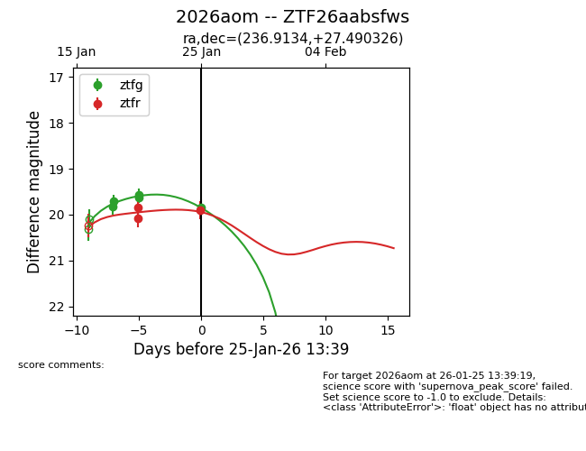
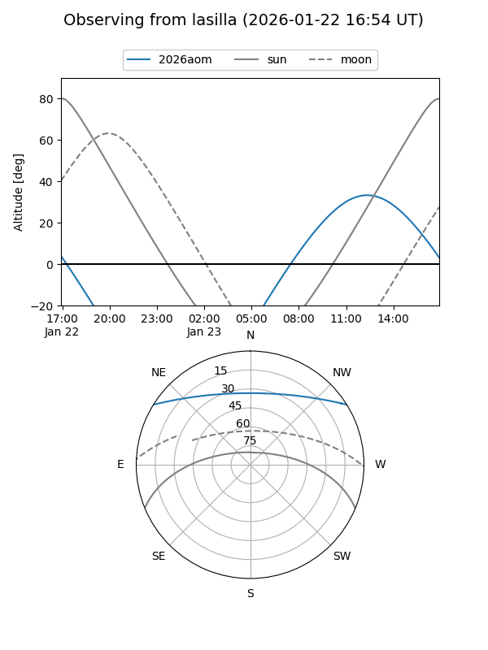
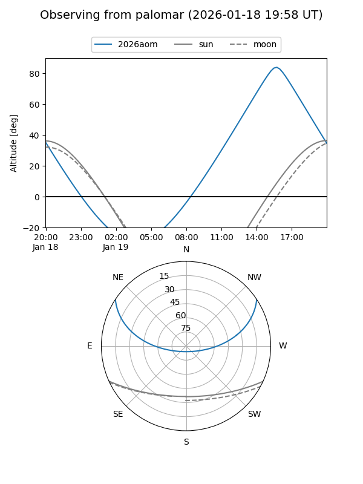
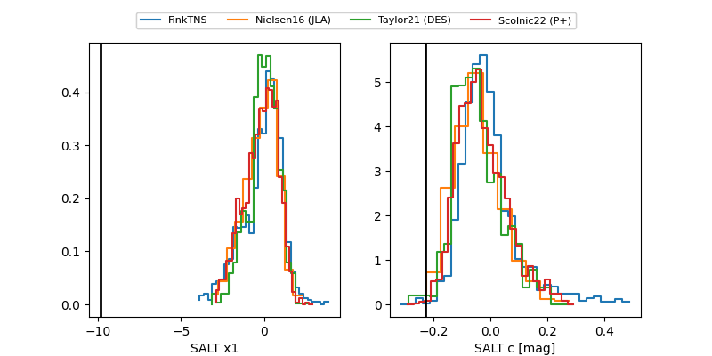

2026aom
Target 2026aom at 2026-01-20 11:31
Aliases and brokers:
FINK: link
Lasair: link
ALeRCE: link
TNS: link
YSE: link
alt names
ZTF26aabsfws (ztf,fink_ztf)
2026aom (tns,yse)
Coordinates:
equatorial (ra, dec) = 236.9134,+27.49033
equatorial (HMS+DMS) = 15:47:39.22,+27:29:25.17
galactic (l, b) = (43.9509,+51.06711)
Flags:
Photometry:
last ztfg=19.71
2 ztfg detections
Lightcurve

Visibility


Additional plots
